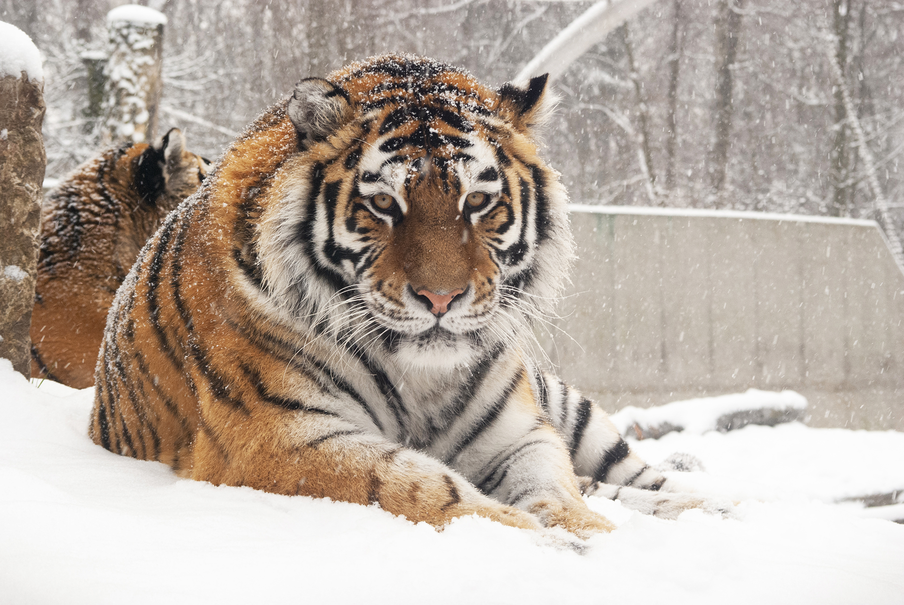

Tygrys Syberyjski

Największy drapieżnik wśród kotów
Tygrys syberyjski to największy przedstawiciel rodziny kotowatych. Jego majestatyczny wygląd, niesamowita siła i zdolności łowieckie czynią go jednym z najbardziej fascynujących zwierząt na świecie.
Ciekawostki o tygrysie syberyjskim
- 🌍 Żyje głównie na Dalekim Wschodzie, w Rosji i Chinach.
- 🐅 Może osiągnąć długość nawet 3,3 metra (wraz z ogonem).
- ⚖️ Waga samca może przekraczać 300 kg.
- 🐾 Potrafi pokonać dystans 10 km podczas polowania.
- 👁️ Jego widzenie nocne jest 6 razy lepsze niż u człowieka.